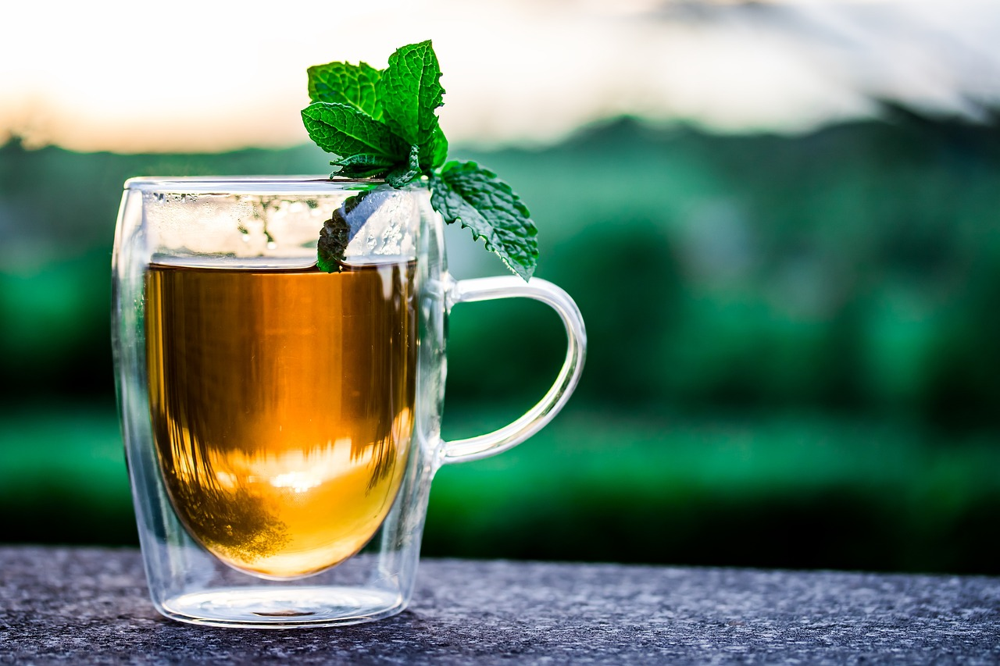

Boba Without Boba

Description
This is a simple fruit tea recipe that simulates fruit boba but without
tapioca pearls.
Ingredients
- green tea
- fruit juice (e.g. mango juice)
Steps
- Prepare green tea. Fill up 1/2 to 3/4 of a cup with tea.
- Fill the remainder of the cup with fruit juice.